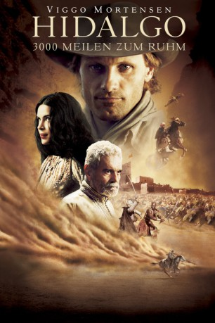

#2914 Hidalgo - 3000 Meilen zum Ruhm
Alternativ: Hidalgo
 
 IMDB-Wertung: 6.7 / 10
IMDB-Wertung: 6.7 / 10  Metascore: 54
Metascore: 54 
Texas/USA, 1890: Der Kurierreiter Frank T. Hopkins und sein Pferd, der drahtige Mustang Hidalgo, gehen gemeinsam durch dick und dünn. Ihr Ruf ist so legendär, dass er über den Ozean nach Arabien dringt. Die Gesandtschaft eines Scheichs lädt Hopkins als ersten Amerikaner ein, seine Kräfte mit den stolzesten Reitern des Orients zu messen bei einem mörderischen Ausdauerrennen, das über 3000 Meilen durch die arabische Wüste führt. Hopkins willigt ein und stürzt sich in das Abenteuer seines Lebens. Denn nicht nur unerträgliche Hitze, harte Konkurrenten, Sandstürme, Heuschrekenschwärme und eine wunderschöne Prinzessin erwarten den Cowboy, sondern auch seine inneren Dämonen, denen er auf dem Rücken von Hidalgo stets zu entfliehen versucht hat.
Jahr: 2004
Dauer: 136 Minuten
FSK: 12
Land: USA Studio: Buena Vista PicturesTonspuren: DTS - ,
Untertitel: Deutsch, Englisch,
Auflösung: 1080p (1920x800) Größe: 12288 MB
Genre: Action, Abenteuer, Western
Regisseur:  Joe Johnston
Joe Johnston
Drehbuch: John Fusco
Soundtrack: James Newton Howard
Darsteller:
 Viggo Mortensen als Frank Hopkins
Viggo Mortensen als Frank Hopkins- Zuleikha Robinson als Jazira
 Omar Sharif als Sheikh Riyadh
Omar Sharif als Sheikh Riyadh- Louise Lombard als Lady Anne Davenport
 Adam Alexi-Malle als Aziz
Adam Alexi-Malle als Aziz Saïd Taghmaoui als Prince Bin Al Reeh
Saïd Taghmaoui als Prince Bin Al Reeh Silas Carson als Katib
Silas Carson als Katib J.K. Simmons als Buffalo Bill Cody
J.K. Simmons als Buffalo Bill Cody- Adoni Maropis als Sakr
 Peter Mensah als Jaffa
Peter Mensah als Jaffa- Joshua Wolf Coleman als The Kurd
 Floyd 'Red Crow' Westerman als Chief Eagle Horn
Floyd 'Red Crow' Westerman als Chief Eagle Horn- Elizabeth Berridge als Annie Oakley
 C. Thomas Howell als Preston Webb
C. Thomas Howell als Preston Webb Jerry Hardin als Nate Salisbury
Jerry Hardin als Nate Salisbury Frank Collison als Texas Jack
Frank Collison als Texas Jack Chris Owen als First Soldier
Chris Owen als First Soldier Marshall Manesh als Camel Skinner
Marshall Manesh als Camel Skinner- George Gerdes als Major Whitside
- Michael Canavan als Cattleman
 David Midthunder als Black Coyote
David Midthunder als Black Coyote- Dave Florek als Sentry at Wounded Knee
 Jeff Kober als Sergeant at Wounded Knee
Jeff Kober als Sergeant at Wounded Knee- Sam Sako als Call to Prayer Singer
- Kimberly Guerrero als Frank's Mother
- Zac Badasci als Young Frank Hopkins
- Joseph J. Dawson als Wild West Performer , uncredited
 Malcolm McDowell als Major Davenport , uncredited
Malcolm McDowell als Major Davenport , uncredited- Francesca Poston als Madam in Saloon , uncredited
 Harsh Nayyar als Yusef
Harsh Nayyar als Yusef- Victor Talmadge als Rau Rasmussen
- Franky Mwangi als Slave Boy
- Stevan Rimkus als Military Cistern Lieutenant
- Philip Sounding Sides als Chief Big Foot
- Todd Kimsey als Corporal at Wounded Knee
- Ednah New Rider Weber als Old Lakota Woman
- Adam Ozturk als Bedouin Rider
 John Prosky als Officer at Horse Corral
John Prosky als Officer at Horse Corral- Lee Trotter als Soldier at Wounded Knee
- Te'Amir Sweeney als Tower Boy
- Jake Miller als Ghost Dance Singer
- Mary Ellis als Mary
- Clement Richards als Lakota Wagon Driver
- Beverly Graham als Saloon Gal , uncredited
- Jonathan Passow als Bar Cowboy , uncredited
- Shawn Michael Perry als Ghostdancer , uncredited
- T.J. als Hidalgo - Horse , uncredited
Datei: X:\2004(G-M)\Hidalgo - 3000 Meilen zum Ruhm (2004, FSK12, 1920x800).mkv seit 31.12.2015
Festplatte: HD 2003-2004-2005(A-F)
 Es gibt insgesamt 41 Filme in der Gruppe '2004(G-M)'
Es gibt insgesamt 41 Filme in der Gruppe '2004(G-M)'